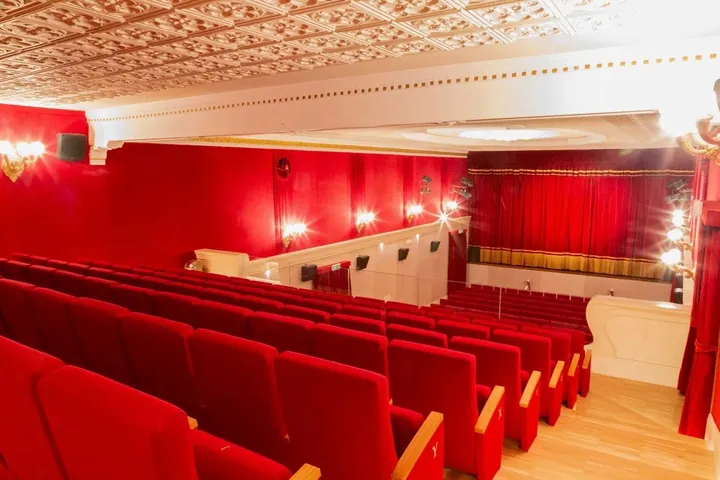

da gio 29 ott a mer 12 mag
Teatro Bellini Stagione Teatrale
La stagione teatrale 2026-2027 del Cinema Teatro Bellini propone una rassegna di qualità, ricca di emozioni e divertimento, e porta entro le mura di un piccolo borgo medievale spettacoli che generalmente si trovano in cartellone nei teatri di centri ben più grandi.
 Indicazioni
Indicazioni
- Costi e prenotazioni
- Costo non indicato · Prenotazione non indicata
- Programma
- Programma da verificare. Apri la fonte ufficiale per orari e possibili aggiornamenti.
- In caso di maltempo
- Nessuna indicazione specifica pubblicata.
- Note
- Acquisito automaticamente dalla fonte.
L’EVENTO
Descrizione completa
La stagione teatrale 2026-2027 del Cinema Teatro Bellini propone una rassegna di qualità, ricca di emozioni e divertimento, e porta entro le mura di un piccolo borgo medievale spettacoli che generalmente si trovano in cartellone nei teatri di centri ben più grandi.
Ad aprire la rassegna sarà, giovedì 29 ottobre, Paolo Crepet, con uno spettacolo su libertà individuale e tecnologie. Il 5 dicembre sarà la volta di Pierpaolo Spollon che porterà in scena un monologo sull'evoluzione del ruolo di padre. Giuseppe Giacobazzi , il 15 gennaio, porta sul palcoscenico la sua osteria, in un happening conviviale. Il 4 febbraio toccherà alla commedia ironica che vede protagonisti Giulio Scarpati e Amanda Sandrelli. L'11 febbraio Nuzzo e Di Biase mettono in scena uno spettacolo che racconta la vita di coppia. Gli Oblivion si esibiranno il 25 febbraio con il loro divertentissimo musical. Il 4 marzo Raul Cremona presenta il suo spettacolo di magia, musica e gag. Il 16 marzo vanno in scena i The Kitchen Company con un capolavoro comico. Il 9 aprile salirà sul palco Antonio Ornano con il capolavoro di Benni, e il 17 tornerà in scena Paolo Ruffini . Il 12 maggio la rassegna si conclude con il ritorno sul palco degli amatissimi Legnanesi .
IL PROGRAMMA
Programma e orari
Appuntamenti raccolti dalle fonti elencate. Dove manca un orario, non è ancora disponibile in questa scheda.
Programma pubblicato
- 2026-10-29 — 2026-10-29 · 21:00:00
- 2026-12-05 — 2026-12-05 · 21:00:00
- 2027-01-15 — 2027-01-15 · 21:00:00
- 2027-02-04 — 2027-02-04 · 21:00:00
- 2027-02-11 — 2027-02-11 · 21:00:00
- 2027-02-25 — 2027-02-25 · 21:00:00
- 2027-03-04 — 2027-03-04 · 21:00:00
- 2027-03-16 — 2027-03-16 · 21:00:00
- 2027-04-09 — 2027-04-09 · 21:00:00
- 2027-04-17 — 2027-04-17 · 21:00:00
- 2027-05-12 — 2027-05-12 · 21:00:00
INFORMAZIONI UTILI
Prima di partire
- Controllare la fonte prima di partire.
ORGANIZZAZIONE